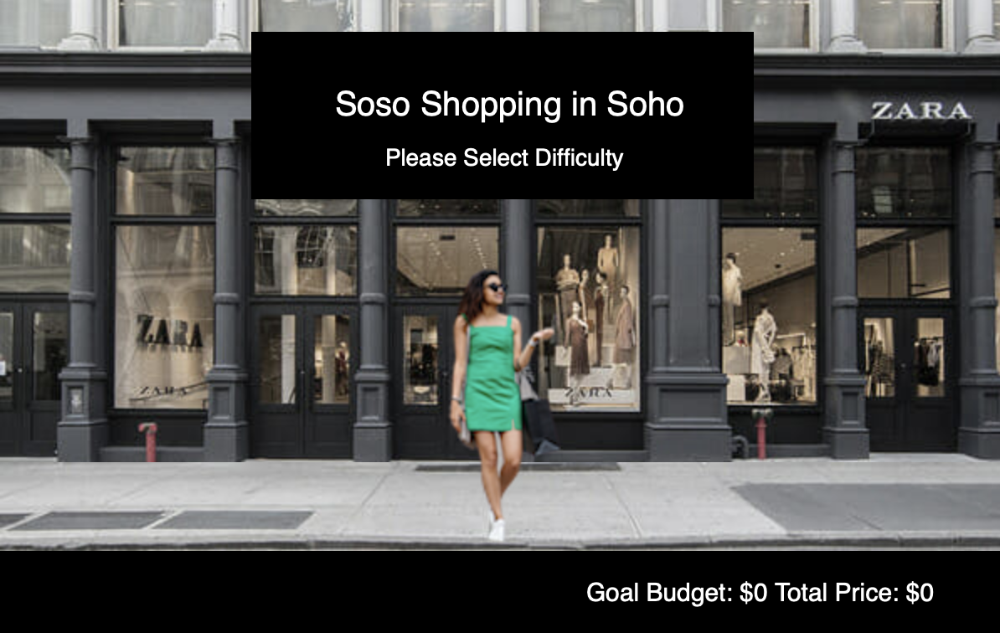
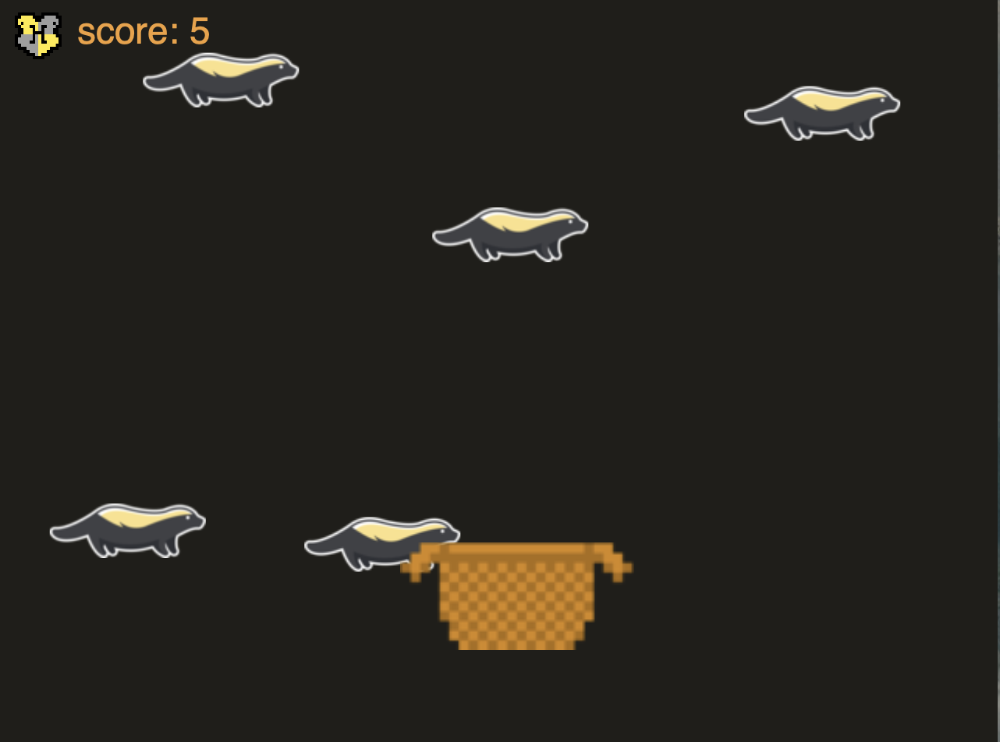
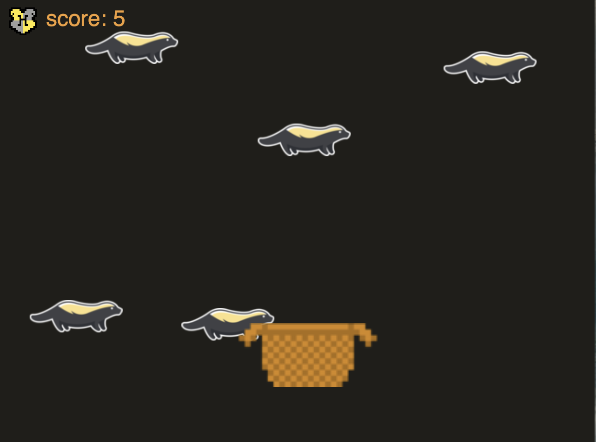

I first started coding my senior year of high school..mainly python print statements and loop iterations ü§≠ When it came time for college applications, I had no idea what I wanted to study ü§∑ü誂Äç‚ôÄÔ∏è I knew I loved being challenged and I enjoyed problem solving üí≠ 3.5 Years later and I graduated with a Bachelors degree in Computer Science from NYU üë©‚Äçüéì My coding journey has included many broken codes, long nights of debugging, constant stackoverflow visits, and most importantly MANY paper drafts üë©‚Äçüíª I have never started a project without fully outlining my plans on paper üìù


Projects
Outfit of The Day (OOTD)
Applied Internet Technology - (NodeJS, MongoDB, HTML, CSS)
Outfit of the Day is a web application I created as a final project for one of my courses. If you are obsessed with fashion and planning your outfits.. this application is made for you! Planning outfits can be super strressful, but one you get that perfect outfit of the day, you want to be able to save it and refer to it for future #OOTD ideas! Hence, I created OOTD, for the people who spend hours (and I mean hoooooursss) trying to come up with outfits.
OOTD is a web application that allows users to keep track of outfits by entering image links and adding relevant tags. The application then stores and sorts the uploaded outfit picture by season.
The application also features an outfit planner, which will allow users to plan out outfits based on in app weather reports.
Users can register and login. Once they're logged in, they can create or view the universal lookbook and planners. For the lookbook they can add pictures to the list!
Paddle Board Game
Interactive Computing - (p5 javascript library)
First p5 game - Used p5 library to create a basic paddle board game
A ball moves around the board and the user uses the A and D keys to direct the paddle assuring that the ball bounces.
Soso Shopping in Soho
Interactive Computing - (p5 javascript library)
Created and executed Soso Shopping in Soho as a submission for a freeform p5 game assignment
The goal of the game is to have the user navigate Soso (AKA Sonam ü§≠) on the streets of Soho and collect clothing items so the total price of Soso's bag meets the goal budget.
The user usess both the A,D, and W keys to collect the objects and avoid the obstacles in the game.
Implemented different difficulty levels and states of the game.
Wizarding World - Harry Potter Universe
Interactive Computing - (p5 javascript library, HTML)
Collaborated with a peer to build an interactive Harry Potter World with many mini games all based off the books.
Created an overarching webpage to explain each game and an interactive map to connect all of the mini games together.
Using the mouse the user can move Harry's character and select a mini game.
When selecting a mini game, the user is first taken to a simple one stroke spell game. Once the spell challenge is completed, the user will unlock the selected mini game.


The sorting hat game includes 4 mini games each based on a household (Gryffindor,Slytherin, Hufflepuff, Ravenclaw).
At the end of the 4 games, the user is placed into a Hogwarts House.
 

Dance Dance Yule Ball is based off Harry's night out with Parvati. Help Harry collect golden eggs while also hitting all the correct dance moves.
At the end of the 4 games, the user is placed into a Hogwarts House.
Umbridge Escape is based on the scene when Fred and George interrupted Umbridge's proctaring of the OWL examinations.
Help Fred launch fireworks near the moving Umbridges while avoiding getting too close.
Avatar Pandora Universe
Interactive Computing - (A-Frame Web VR, p5 javascript library, HTML)
Collaborated with a peer to build an interactive Pandora Universe with many mini games that incorporate both VR and AR.
Created an overarching webpage to explain each game and connect all of the mini games.
The Woodsprite Collection game allows the user to use the Hiro marker to navigate Neytiri's character around the screen to collect woodsprites while avoiding boulders.
The game incorporates perlin noise, game states, and an added feature that informs the user when the marker is not visible.


The VR scene is a recreation of the Pandora universe. Our goal was to include features like the dragon, woodsprites, tree of souls, and overall vibrant colors.
We downloaded and integrated many low polygon artworks to create the scene.
We also created an interaction portion that allows the user to experience a precoded Pandora tour on the dragon.
San Francisco Movie Data
Data Structures (Java)
Wrote code to parse, organize, and store data from a CSV file.
Wrote various code versions by implementing an array, linked list, and binary search tree from scratch
Tested code thoroughly by considering and passing base case tests
Other Super Cool Coding Experiences
- Artificial Intelligence
- Iterative Deepening and Hill Climbing to solve Best Vertex problem
- Naive Bayes on Datasets
- Using Davis Putnam to solve the Peg Problem
- Compositional Semantics and Basic Natural Language Processing
- Parallel Computing
- This website!!
Contact
Check out my social media and feel free to drop me a message!